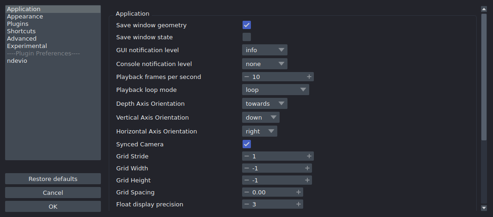
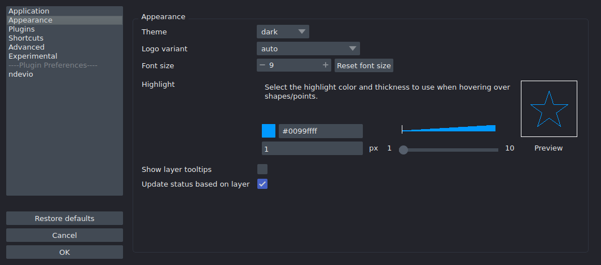
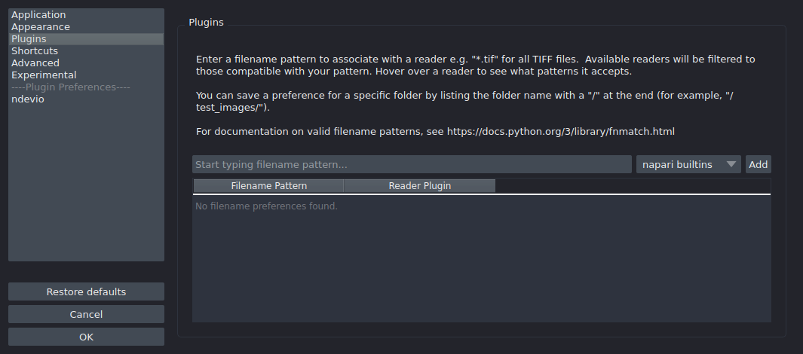
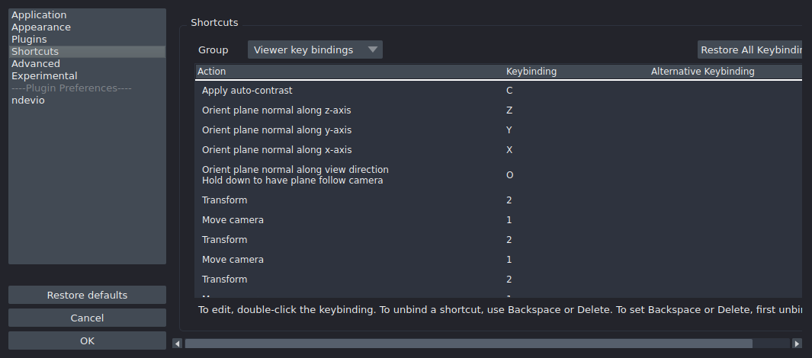
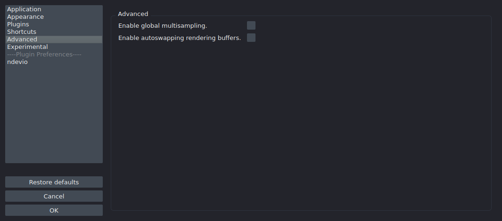
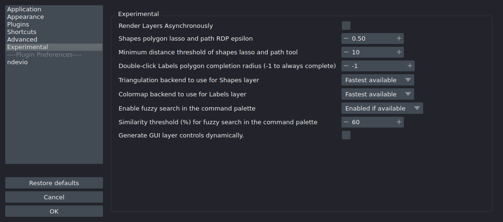
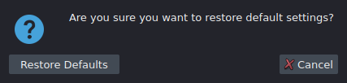

Preferences#
napari settings#
napari provides persistent settings that are stored on a per environment basis. This means that if you have multiple Python environments, each with a napari installation (e.g. different versions), the napari in each environment will have its own set of stored preferences. So, for example, you could have an environment where napari always uses the Light theme and another one where napari always uses the Dark theme.
A wide range of settings are available, organized into sections, and described in more detail below.
Where settings are stored#
Settings are stored in a settings.yaml file and napari uses appdirs
to determine the save location: the platform-specific user configuration directory.
You can check where a napari installation has stored settings by looking for “Settings path” in the output of:
napari --info
Resetting settings to defaults using the command line (CLI)#
Sometimes, for example due to a version change, an issue with the stored settings can prevent napari from launching or cause other issues. In those cases, it can be useful to reset the settings to the defaults from the command line. To reset all napari settings to the default values:
napari --reset
Programmatic access to the settings#
Settings are managed by getting the global settings object and modifying settings:
from napari.settings import get_settings
settings = get_settings()
# then modify... e.g:
settings.appearance.theme = 'dark'
You can get more information about individual settings, their types, and default values in each of the settings section descriptions below.
The Preferences dialog#
napari provides a Preferences dialog to manage the settings using a graphical user interface (GUI). Importantly, this dialog also allows you to customize napari keyboard shortcuts (keybindings).
On Windows and Linux, the Preferences dialog can be accessed in the File menu. On macOS, it can be accessed in the napari menu.
The settings are grouped by sections that are accessible in a list on the left side of the dialog.
Application Settings#
Main application settings.

More details on the individual Application settings
Brush size on mouse move modifiers
Modifiers to activate changing the brush size by moving the mouse.
Access programmatically with
SETTINGS.application.brush_size_on_mouse_move_modifiers.Environmental variable:
NAPARI_APPLICATION_BRUSH_SIZE_ON_MOUSE_MOVE_MODIFIERSType:
<enum 'BrushSizeOnMouseModifiers'>Default:
<BrushSizeOnMouseModifiers.ALT: 'Alt'>.
Confirm window or application closing
Ask for confirmation before closing a napari window or application (all napari windows).
Access programmatically with
SETTINGS.application.confirm_close_window.Environmental variable:
NAPARI_APPLICATION_CONFIRM_CLOSE_WINDOWType:
<class 'bool'>Default:
True.
Console notification level
Select the notification level for the console.
Access programmatically with
SETTINGS.application.console_notification_level.Environmental variable:
NAPARI_APPLICATION_CONSOLE_NOTIFICATION_LEVELType:
<enum 'NotificationSeverity'>Default:
<NotificationSeverity.NONE: 'none'>.
Dask cache
Settings for dask cache (does not work with distributed arrays)
Access programmatically with
SETTINGS.application.dask.Environmental variable:
NAPARI_APPLICATION_DASKType:
<class 'napari.settings._application.DaskSettings'>Default:
DaskSettings(enabled=True, cache=4.189855744).
Depth Axis Orientation
Orientation of the depth axis in 3D view. Default is “Towards”; <0.6.0 was “Away”.
Access programmatically with
SETTINGS.application.depth_axis_orientation.Environmental variable:
NAPARI_APPLICATION_DEPTH_AXIS_ORIENTATIONType:
<enum 'DepthAxisOrientation'>Default:
<DepthAxisOrientation.TOWARDS: 'towards'>.
Float display precision
Number of significant digits when displaying float values in the status bar and layer tooltips.
Access programmatically with
SETTINGS.application.float_display_precision.Environmental variable:
NAPARI_APPLICATION_FLOAT_DISPLAY_PRECISIONType:
<class 'int'>Default:
3.
Grid Height
Number of rows in the grid.
Access programmatically with
SETTINGS.application.grid_height.Environmental variable:
NAPARI_APPLICATION_GRID_HEIGHTType:
<class 'int'>Default:
-1.
Grid Spacing
The amount of spacing inbetween grid viewboxes. If between 0 and 1, it is interpreted as a proportion of the size of the viewboxes. If equal or greater than 1, it is interpreted as screen pixels.
Access programmatically with
SETTINGS.application.grid_spacing.Environmental variable:
NAPARI_APPLICATION_GRID_SPACINGType:
<class 'float'>Default:
0.
Grid Stride
Number of layers to place in each grid viewbox before moving on to the next viewbox. A negative stride will cause the order in which the layers are placed in the grid to be reversed. 0 is not a valid entry.
Access programmatically with
SETTINGS.application.grid_stride.Environmental variable:
NAPARI_APPLICATION_GRID_STRIDEType:
<class 'int'>Default:
1.
Grid Width
Number of columns in the grid.
Access programmatically with
SETTINGS.application.grid_width.Environmental variable:
NAPARI_APPLICATION_GRID_WIDTHType:
<class 'int'>Default:
-1.
GUI notification level
Select the notification level for the user interface.
Access programmatically with
SETTINGS.application.gui_notification_level.Environmental variable:
NAPARI_APPLICATION_GUI_NOTIFICATION_LEVELType:
<enum 'NotificationSeverity'>Default:
<NotificationSeverity.INFO: 'info'>.
Delay to treat button as hold in seconds
This affects certain actions where a short press and a long press have different behaviors, such as changing the mode of a layer permanently or only during the long press.
Access programmatically with
SETTINGS.application.hold_button_delay.Environmental variable:
NAPARI_APPLICATION_HOLD_BUTTON_DELAYType:
<class 'float'>Default:
0.5.
Horizontal Axis Orientation
Orientation of the horizontal axis in 2D and 3D view. Default is “Right”.
Access programmatically with
SETTINGS.application.horizontal_axis_orientation.Environmental variable:
NAPARI_APPLICATION_HORIZONTAL_AXIS_ORIENTATIONType:
<enum 'HorizontalAxisOrientation'>Default:
<HorizontalAxisOrientation.RIGHT: 'right'>.
New labels data type
data type for labels layers created with the “new labels” button.
Access programmatically with
SETTINGS.application.new_labels_dtype.Environmental variable:
NAPARI_APPLICATION_NEW_LABELS_DTYPEType:
<enum 'LabelDTypes'>Default:
<LabelDTypes.uint8: 'uint8'>.
Playback frames per second
Playback speed in frames per second.
Access programmatically with
SETTINGS.application.playback_fps.Environmental variable:
NAPARI_APPLICATION_PLAYBACK_FPSType:
<class 'int'>Default:
10.
Playback loop mode
Loop mode for playback.
Access programmatically with
SETTINGS.application.playback_mode.Environmental variable:
NAPARI_APPLICATION_PLAYBACK_MODEType:
<enum 'LoopMode'>Default:
<LoopMode.LOOP: 'loop'>.
Save window geometry
Toggle saving the main window size and position.
Access programmatically with
SETTINGS.application.save_window_geometry.Environmental variable:
NAPARI_APPLICATION_SAVE_WINDOW_GEOMETRYType:
<class 'bool'>Default:
True.
Save window state
Toggle saving the main window state of widgets.
Access programmatically with
SETTINGS.application.save_window_state.Environmental variable:
NAPARI_APPLICATION_SAVE_WINDOW_STATEType:
<class 'bool'>Default:
False.
Full path to a startup script
Path to a Python script that will be executed on napari startup. This can be used to customize the behavior of napari or load specific plugins automatically.
Access programmatically with
SETTINGS.application.startup_script.Environmental variable:
NAPARI_APPLICATION_STARTUP_SCRIPTType:
<class 'pathlib.Path'>Default:
PosixPath('.').
Synced Camera
Controls how camera state is managed when switching between 2D and 3D views. When checked, camera center and zoom are shared between views, with the depth (Z) component synced via the dims slider. When unchecked, each mode remembers its own camera state independently.
Access programmatically with
SETTINGS.application.synced_camera.Environmental variable:
NAPARI_APPLICATION_SYNCED_CAMERAType:
<class 'bool'>Default:
True.
Vertical Axis Orientation
Orientation of the vertical axis in 2D and 3D view. Default is “Down”.
Access programmatically with
SETTINGS.application.vertical_axis_orientation.Environmental variable:
NAPARI_APPLICATION_VERTICAL_AXIS_ORIENTATIONType:
<enum 'VerticalAxisOrientation'>Default:
<VerticalAxisOrientation.DOWN: 'down'>.
Appearance Settings#
User interface appearance settings.

More details on the individual Appearance settings
Font size
Select the user interface font size.
Access programmatically with
SETTINGS.appearance.font_size.Environmental variable:
NAPARI_APPEARANCE_FONT_SIZEType:
<class 'int'>Default:
9.
Highlight
Select the highlight color and thickness to use when hovering over shapes/points.
Access programmatically with
SETTINGS.appearance.highlight.Environmental variable:
NAPARI_APPEARANCE_HIGHLIGHTType:
<class 'napari.settings._appearance.HighlightSettings'>Default:
HighlightSettings(highlight_thickness=1, highlight_color=[0.0, 0.6, 1.0, 1.0]).
Show layer tooltips
Toggle to display a tooltip on mouse hover.
Access programmatically with
SETTINGS.appearance.layer_tooltip_visibility.Environmental variable:
NAPARI_APPEARANCE_LAYER_TOOLTIP_VISIBILITYType:
<class 'bool'>Default:
False.
Logo variant
Select which logo variant to use.
Access programmatically with
SETTINGS.appearance.logo.Environmental variable:
NAPARI_APPEARANCE_LOGOType:
<class 'napari.settings._fields.Logo'>Default:
'auto'.
Theme
Select the user interface theme.
Access programmatically with
SETTINGS.appearance.theme.Environmental variable:
NAPARI_APPEARANCE_THEMEType:
<class 'napari.settings._fields.Theme'>Default:
'dark'.
Update status based on layer
Calculate status bar based on current active layer and mouse position.
Access programmatically with
SETTINGS.appearance.update_status_based_on_layer.Environmental variable:
NAPARI_APPEARANCE_UPDATE_STATUS_BASED_ON_LAYERType:
<class 'bool'>Default:
True.
Plugins Settings#
Plugins settings.

More details on the individual Plugins settings
Assign file extensions to specific reader plugins
Access programmatically with
SETTINGS.plugins.extension2reader.Environmental variable:
NAPARI_PLUGINS_EXTENSION2READERType:
dict[str, str]Default:
PydanticUndefined.
Shortcuts Settings#
Shortcut settings.

More details on the individual Shortcuts settings
Set keyboard shortcuts for actions.
Access programmatically with
SETTINGS.shortcuts.shortcuts.Environmental variable:
NAPARI_SHORTCUTS_SHORTCUTSType:
dict[str, list[app_model.types._keys._keybindings.KeyBinding]]
Default Shortcuts
Action |
Shortcut |
|---|---|
napari:toggle_console_visibility |
[<KeyBinding at 0x759090f70470: Ctrl+Shift+C>] |
napari:toggle_ndisplay |
[<KeyBinding at 0x759090e05bb0: Ctrl+Y>] |
napari:toggle_theme |
[<KeyBinding at 0x759090e05700: Ctrl+Shift+T>] |
napari:reset_view |
[<KeyBinding at 0x759090e05dc0: Ctrl+R>] |
napari:delete_selected_layers |
[<KeyBinding at 0x759090e05460: Ctrl+Delete>, <KeyBinding at 0x759090e07ec0: Ctrl+Backspace>] |
napari:show_shortcuts |
[<KeyBinding at 0x759090e04bf0: Ctrl+Alt+/>] |
napari:increment_dims_left |
[<KeyBinding at 0x759090e07770: Left>] |
napari:increment_dims_right |
[<KeyBinding at 0x759090e07890: Right>] |
napari:focus_axes_up |
[<KeyBinding at 0x759090e07860: Alt+Up>] |
napari:focus_axes_down |
[<KeyBinding at 0x759090e07920: Alt+Down>] |
napari:roll_axes |
[<KeyBinding at 0x759090e07980: Ctrl+E>] |
napari:transpose_axes |
[<KeyBinding at 0x759090e079e0: Ctrl+T>] |
napari:rotate_layers |
[<KeyBinding at 0x759090e07a40: Ctrl+Alt+T>] |
napari:toggle_grid |
[<KeyBinding at 0x759090e07aa0: Ctrl+G>] |
napari:toggle_selected_visibility |
[<KeyBinding at 0x759090e07b00: V>] |
napari:toggle_unselected_visibility |
[<KeyBinding at 0x759090e07b60: Shift+V>] |
napari:select_layer_above |
[<KeyBinding at 0x759090e07bc0: Ctrl+Up>] |
napari:select_layer_below |
[<KeyBinding at 0x759090e07c20: Ctrl+Down>] |
napari:show_only_layer_above |
[<KeyBinding at 0x759090e07c80: Shift+Alt+Up>] |
napari:show_only_layer_below |
[<KeyBinding at 0x759090e07d10: Shift+Alt+Down>] |
napari:hold_for_pan_zoom |
[<KeyBinding at 0x759090e07e30: Space>] |
napari:activate_labels_erase_mode |
[<KeyBinding at 0x759090e0c3b0: 1>, <KeyBinding at 0x759090f70560: E>] |
napari:activate_labels_paint_mode |
[<KeyBinding at 0x759090f709b0: 2>, <KeyBinding at 0x759090e07680: P>] |
napari:activate_labels_polygon_mode |
[<KeyBinding at 0x759090e076e0: 3>] |
napari:activate_labels_fill_mode |
[<KeyBinding at 0x759090e07560: 4>, <KeyBinding at 0x759090e075c0: F>] |
napari:activate_labels_picker_mode |
[<KeyBinding at 0x759090e07440: 5>, <KeyBinding at 0x759090e074a0: L>] |
napari:activate_labels_pan_zoom_mode |
[<KeyBinding at 0x759090e07320: 6>, <KeyBinding at 0x759090e07380: Z>] |
napari:activate_labels_transform_mode |
[<KeyBinding at 0x759090e07200: 7>] |
napari:new_label |
[<KeyBinding at 0x759090e07260: M>] |
napari:swap_selected_and_background_labels |
[<KeyBinding at 0x759090e070e0: X>] |
napari:decrease_label_id |
[<KeyBinding at 0x759090e07140: ->] |
napari:increase_label_id |
[<KeyBinding at 0x759090e06fc0: =>] |
napari:decrease_brush_size |
[<KeyBinding at 0x759090e07020: [>] |
napari:increase_brush_size |
[<KeyBinding at 0x759090e06ea0: ]>] |
napari:toggle_preserve_labels |
[<KeyBinding at 0x759090e06f00: B>] |
napari:reset_polygon |
[<KeyBinding at 0x759090e06d80: Escape>] |
napari:complete_polygon |
[<KeyBinding at 0x759090e06de0: Enter>] |
napari:activate_points_add_mode |
[<KeyBinding at 0x759090e06c60: 2>, <KeyBinding at 0x759090e06cc0: P>] |
napari:activate_points_select_mode |
[<KeyBinding at 0x759090e06ae0: 3>, <KeyBinding at 0x759090e06ba0: S>] |
napari:activate_points_pan_zoom_mode |
[<KeyBinding at 0x759090e06990: 4>, <KeyBinding at 0x759090e06a50: Z>] |
napari:activate_points_transform_mode |
[<KeyBinding at 0x759090e06330: 5>] |
napari:select_all_in_slice |
[<KeyBinding at 0x759090e06900: A>] |
napari:select_append_all_in_slice |
[<KeyBinding at 0x759090e067b0: Shift+A>] |
napari:select_all_data |
[<KeyBinding at 0x759090e06810: Ctrl+A>] |
napari:delete_selected_points |
[<KeyBinding at 0x759090e06690: 1>, <KeyBinding at 0x759090e066f0: Delete>, <KeyBinding at 0x759090e06570: Backspace>] |
napari:activate_add_rectangle_mode |
[<KeyBinding at 0x759090e065d0: R>] |
napari:activate_add_ellipse_mode |
[<KeyBinding at 0x759090e06450: E>] |
napari:activate_add_line_mode |
[<KeyBinding at 0x759090e064b0: L>] |
napari:activate_add_path_mode |
[<KeyBinding at 0x759090e06360: T>] |
napari:activate_add_polyline_mode |
[<KeyBinding at 0x759090e06390: Shift+L>] |
napari:activate_add_polygon_mode |
[<KeyBinding at 0x759090e061e0: P>] |
napari:activate_add_polygon_lasso_mode |
[<KeyBinding at 0x759090e06240: Shift+P>] |
napari:activate_direct_mode |
[<KeyBinding at 0x759090e060f0: 4>, <KeyBinding at 0x759090e06150: D>] |
napari:activate_select_mode |
[<KeyBinding at 0x759090e06060: 5>, <KeyBinding at 0x759090e060c0: S>] |
napari:activate_shapes_pan_zoom_mode |
[<KeyBinding at 0x759090e05e80: 6>, <KeyBinding at 0x759090e05220: Z>] |
napari:activate_shapes_transform_mode |
[<KeyBinding at 0x759090e052e0: 7>] |
napari:activate_vertex_insert_mode |
[<KeyBinding at 0x759090e027e0: 2>, <KeyBinding at 0x759090e029f0: I>] |
napari:activate_vertex_remove_mode |
[<KeyBinding at 0x759090e03980: 1>, <KeyBinding at 0x759090e03650: X>] |
napari:copy_selected_shapes |
[<KeyBinding at 0x7590a032a7b0: Ctrl+C>] |
napari:paste_shape |
[<KeyBinding at 0x759090f6f650: Ctrl+V>] |
napari:move_shapes_selection_to_front |
[<KeyBinding at 0x7590a039d760: F>] |
napari:move_shapes_selection_to_back |
[<KeyBinding at 0x7590a0347bc0: B>] |
napari:select_shapes_in_slice |
[<KeyBinding at 0x7590a0347d40: A>, <KeyBinding at 0x759090f6bb00: Ctrl+A>] |
napari:delete_selected_shapes |
[<KeyBinding at 0x759090f6b470: 3>, <KeyBinding at 0x7590a038f3e0: Delete>, <KeyBinding at 0x7590a038da30: Backspace>] |
napari:finish_drawing_shape |
[<KeyBinding at 0x759090e0cdd0: Enter>, <KeyBinding at 0x759090e0d340: Escape>] |
napari:orient_plane_normal_along_x |
[<KeyBinding at 0x759090e0d790: X>] |
napari:orient_plane_normal_along_y |
[<KeyBinding at 0x759090e0de50: Y>] |
napari:orient_plane_normal_along_z |
[<KeyBinding at 0x759090e0e270: Z>] |
napari:orient_plane_normal_along_view_direction |
[<KeyBinding at 0x759090e0e2d0: O>] |
napari:auto_contrast_once |
[<KeyBinding at 0x759090e0e330: C>] |
napari:activate_image_pan_zoom_mode |
[<KeyBinding at 0x759090e0e390: 1>] |
napari:activate_image_transform_mode |
[<KeyBinding at 0x759090e0e3f0: 2>] |
napari:activate_vectors_pan_zoom_mode |
[<KeyBinding at 0x759090e0e450: 1>] |
napari:activate_vectors_transform_mode |
[<KeyBinding at 0x759090e0e4b0: 2>] |
napari:activate_tracks_pan_zoom_mode |
[<KeyBinding at 0x759090e0e510: 1>] |
napari:activate_tracks_transform_mode |
[<KeyBinding at 0x759090e0e570: 2>] |
napari:activate_surface_pan_zoom_mode |
[<KeyBinding at 0x759090e0e5d0: 1>] |
napari:activate_surface_transform_mode |
[<KeyBinding at 0x759090e0e660: 2>] |
Advanced Settings#
Advanced settings.

More details on the individual Advanced settings
Enable autoswapping rendering buffers.
Autoswapping rendering buffers improves quality by reducing tearing artifacts, while sacrificing some performance.
Access programmatically with
SETTINGS.advanced.autoswap_buffers.Environmental variable:
NAPARI_ADVANCED_AUTOSWAP_BUFFERSType:
<class 'bool'>Default:
False.
Enable global multisampling.
Multisampling (antialiasing) improves quality by rendering at higher resolution to reduce aliasing, at the cost of some performance.
Access programmatically with
SETTINGS.advanced.multisampling.Environmental variable:
NAPARI_ADVANCED_MULTISAMPLINGType:
<class 'bool'>Default:
False.
Experimental Settings#
Experimental settings.

More details on the individual Experimental settings
Render Layers Asynchronously
When enabled, layers are loaded in a background thread, improving responsiveness, especially for remote and multiscale data.
Access programmatically with
SETTINGS.experimental.async_.Environmental variable:
NAPARI_EXPERIMENTAL_ASYNC_Type:
<class 'bool'>Default:
False.
Colormap backend to use for Labels layer
*Color mapping backend to use for Labels layer. ‘partsegcore’ requires the optional ‘partsegcore-compiled-backend’ package. ‘numba’ requires the optional ‘numba’ package. ‘pure python’ uses only NumPy and Python. The ‘fastest available’ backend will select the fastest installed backend. *
Access programmatically with
SETTINGS.experimental.colormap_backend.Environmental variable:
NAPARI_EXPERIMENTAL_COLORMAP_BACKENDType:
<enum 'ColormapBackend'>Default:
fastest_available.
Enable fuzzy search in the command palette
When searching for commands via the command palette, use fuzzy finding instead of matching exact words.
Access programmatically with
SETTINGS.experimental.command_palette_fuzzy_search.Environmental variable:
NAPARI_EXPERIMENTAL_COMMAND_PALETTE_FUZZY_SEARCHType:
<enum 'PaletteFuzzySearch'>Default:
<PaletteFuzzySearch.enabled_if_available: 'Enabled if available'>.
Similarity threshold (%) for fuzzy search in the command palette
When searching commands via the command palette, if a command’s similarity to the query is lower than this threshold, it won’t be shown as a match.
Access programmatically with
SETTINGS.experimental.command_palette_fuzzy_search_threshold.Environmental variable:
NAPARI_EXPERIMENTAL_COMMAND_PALETTE_FUZZY_SEARCH_THRESHOLDType:
<class 'int'>Default:
60.
Double-click Labels polygon completion radius (-1 to always complete)
Max radius in pixels from first vertex for double-click to complete a polygon; set -1 to always complete.
Access programmatically with
SETTINGS.experimental.completion_radius.Environmental variable:
NAPARI_EXPERIMENTAL_COMPLETION_RADIUSType:
<class 'int'>Default:
-1.
Generate GUI layer controls dynamically.
Based on the attributes of the currently selected layers, generate layer controls dynamically (even when a single layer is selected). Happens by default with multiple layers.
Access programmatically with
SETTINGS.experimental.dynamic_layer_controls.Environmental variable:
NAPARI_EXPERIMENTAL_DYNAMIC_LAYER_CONTROLSType:
<class 'bool'>Default:
False.
Minimum distance threshold of shapes lasso and path tool
Value determines how many screen pixels one has to move before another vertex can be added to the polygon or path.
Access programmatically with
SETTINGS.experimental.lasso_vertex_distance.Environmental variable:
NAPARI_EXPERIMENTAL_LASSO_VERTEX_DISTANCEType:
<class 'int'>Default:
10.
Shapes polygon lasso and path RDP epsilon
Setting this higher removes more points from polygons or paths. Setting this to 0 keeps all vertices of a given polygon or path.
Access programmatically with
SETTINGS.experimental.rdp_epsilon.Environmental variable:
NAPARI_EXPERIMENTAL_RDP_EPSILONType:
<class 'float'>Default:
0.5.
Triangulation backend to use for Shapes layer
*Triangulation backend to use for Shapes layer. The ‘bermuda’ requires the optional ‘bermuda’ package. The ‘partsegcore’ requires the optional ‘partsegcore-compiled-backend’ package. The ‘triangle’ requires the optional ‘triangle’ package. The ‘numba’ backend requires the optional ‘numba’ package. The ‘pure python’ backend uses the default Python triangulation from vispy. The ‘fastest available’ backend will select the fastest available backend. *
Access programmatically with
SETTINGS.experimental.triangulation_backend.Environmental variable:
NAPARI_EXPERIMENTAL_TRIANGULATION_BACKENDType:
<enum 'TriangulationBackend'>Default:
fastest_available.
Reset settings to defaults using the Preferences dialog#
To reset the preferences click on the Restore defaults button and continue
by clicking on Restore Defaults.

Overriding settings#
napari settings can also be overridden by using environment variables.
The variable names follow a pattern: they start with NAPARI,
followed by the Preference section name, yielding, for example, NAPARI_APPLICATION, followed by the setting
name, yielding, for example, NAPARI_APPLICATION_CONFIRM_CLOSE_WINDOW.
(This specific setting controls whether napari will prompt you to confirm closing the application.)
You can also find the environmentvariable names for each setting in the descriptions for each of the Preference sections above.
You can override settings for a single napari session by setting environment variables at launch:
On Mac and Linux:
NAPARI_APPLICATION_CONFIRM_CLOSE_WINDOW=False napari
On Windows:
set NAPARI_APPLICATION_CONFIRM_CLOSE_WINDOW=False && napari
Or programatically in a script/notebook:
import os
os.environ['NAPARI_APPLICATION_CONFIRM_CLOSE_WINDOW'] = 'False'
Or, depending on your shell, you can persist environment variables for a shell session
using the export command (e.g. bash, zsh):
export NAPARI_APPLICATION_CONFIRM_CLOSE_WINDOW=False
Or, to persist between shell sessions, add the above command to your
shell configuration file e.g ~/.bashrc or ~/.zshrc.